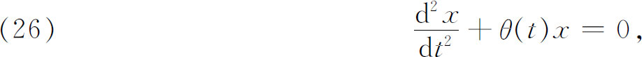
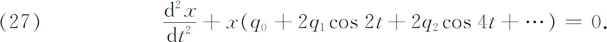
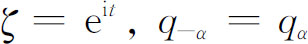
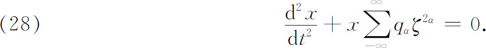
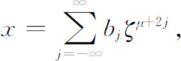
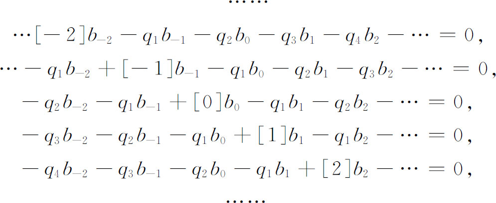
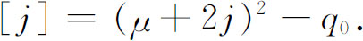

7．希尔在线性方程周期解方面的工作
当自守函数的理论还正处在创立的阶段时，天文学方面的工作激起了对一个二阶常微分方程的兴趣，它比马蒂厄方程更为普遍一些。因为n体问题不可能明显地解出，只有复杂的级数解才可用，于是数学家们转而去挑选周期解。
周期解的重要性来源于行星或卫星轨道的稳定性问题。假如一个行星略微离开其轨道，并给它一个小的速度，那么行星是围绕其轨道振动而过了一定时间后也许又回到轨道呢，还是从此就离开轨道呢？在前一种情形下，轨道是稳定的，而在后一种情形下，轨道是不稳定的。这样，行星的原始运行或运行中的任何不规则性是否周期的问题乃是极其重要的问题。
如我们知道的（第21章第7节），拉格朗日在三体问题中已找到了特殊的周期解。到第一个美国大数学家希尔（George William Hill，1838—1914）研究月球理论之前一直没有找到三体问题新的周期解。1877年，希尔私人出版了关于月球近地点运动的一篇具有卓越创见性的论文(47)。他在《美国数学杂志》（American Journal of Mathematics）(48)上又发表了一篇关于月球运动的很重要的论文。他的工作创立了周期系数的线性齐次微分方程的数学理论。
希尔（在1877年的论文中）第一个基本思想是对月球运动的诸微分方程确定一个近似于实际观察到的运动的周期解。于是他对这个周期解变差写出方程，这使他得到一个带周期系数的四阶线性微分方程组。知道了某些积分后，他便能把这个四阶方程组化简为单独一个二阶线性微分方程

θ（t）是以π为周期的偶函数。把θ（t）展开为傅里叶级数，希尔方程的形式就可以写成

希尔令

，并且写（27）为
然后他令

其中μ与bj待定。把x的这个值代入（28），并令ζ的每个幂的系数为0，他得到二重无穷线性方程组

其中

希尔令未知量bj的系数行列式等于0。他首先确定μ的无穷多个解的性质并给出确定μ的明显公式。然后，利用μ的这些值，他对无穷多个bj的无穷齐次线性方程组解出bj与b0的比值。希尔确实证明了二阶微分方程有周期解，因而证明了月球近地点的运动是周期性的。
在庞加莱证明了希尔这种做法的收敛性，因而使无穷行列式和无穷线性方程组的理论有了根据之前(49)，希尔的工作是一直受人嘲笑的。庞加莱对希尔的成就的注意和完善，使希尔和有关课题著名了。